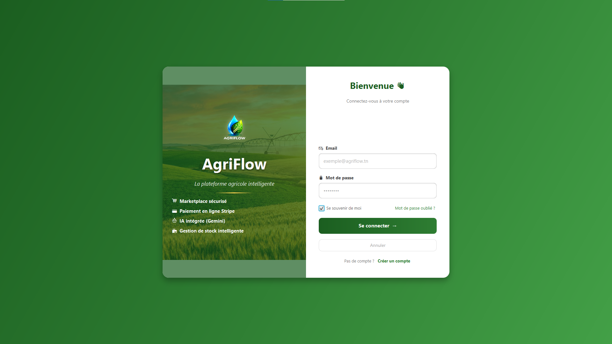
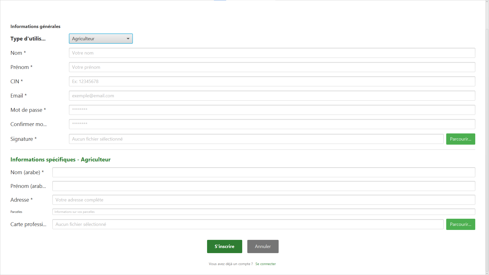
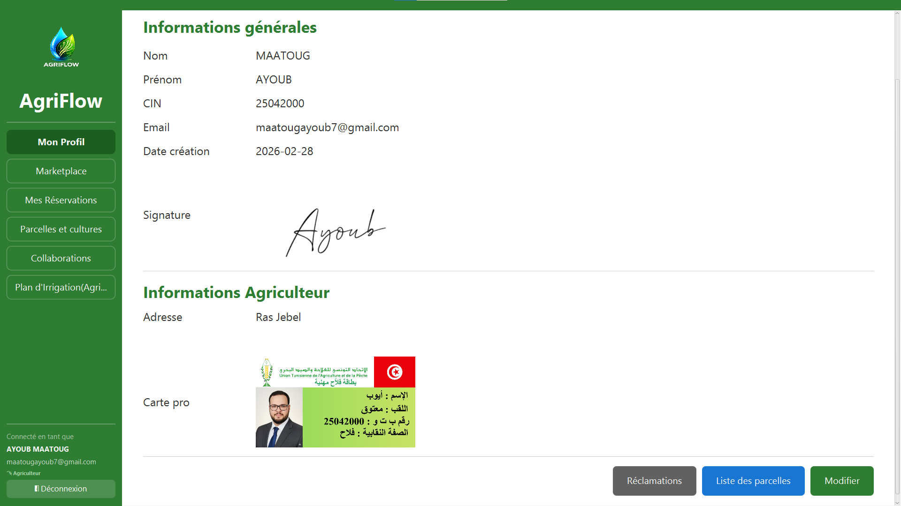
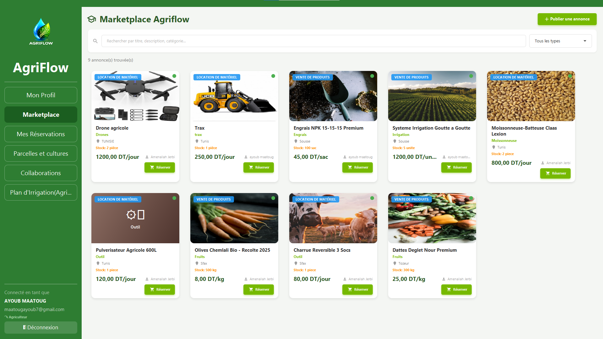
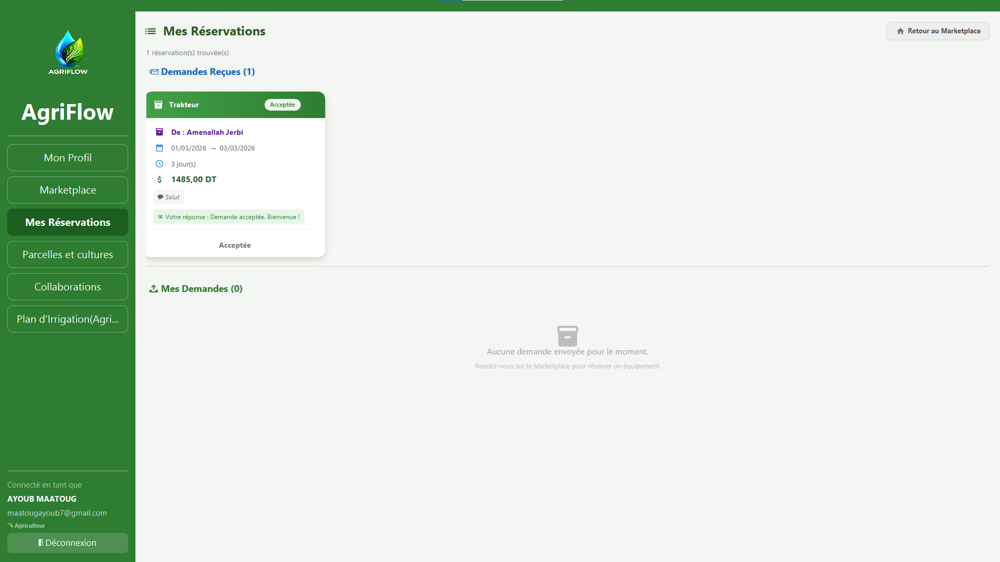
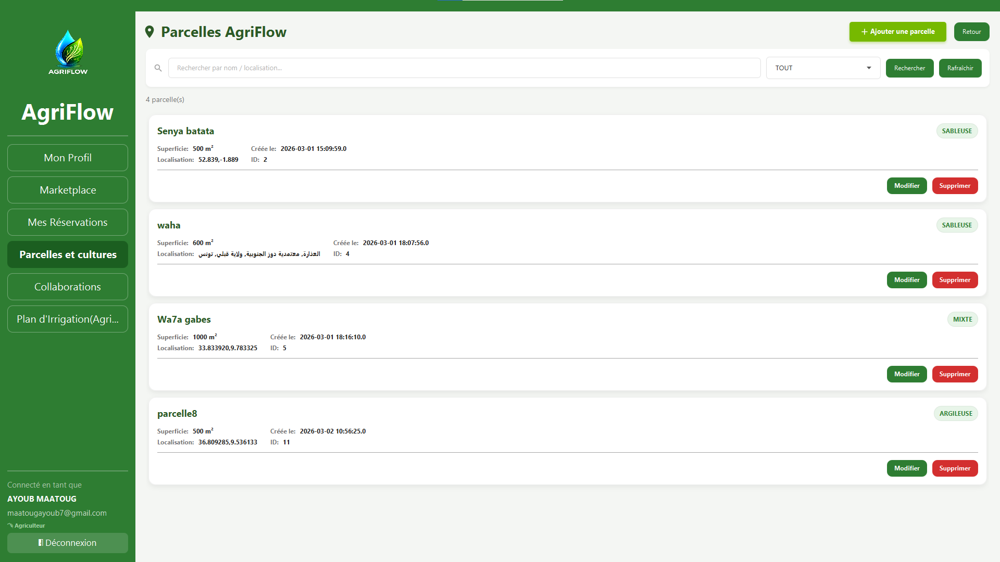
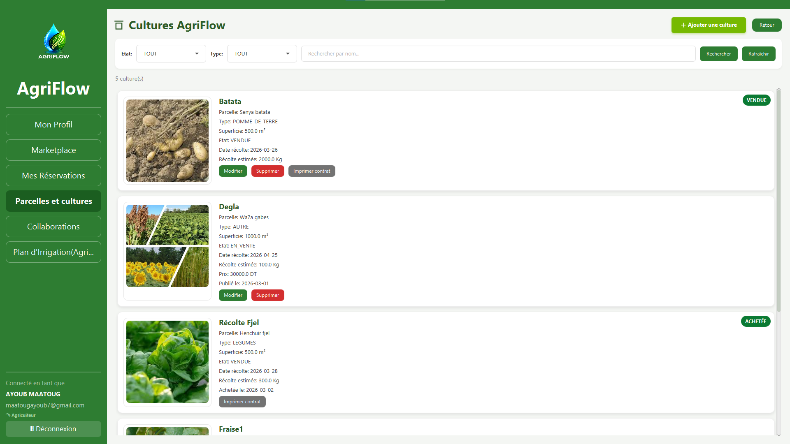
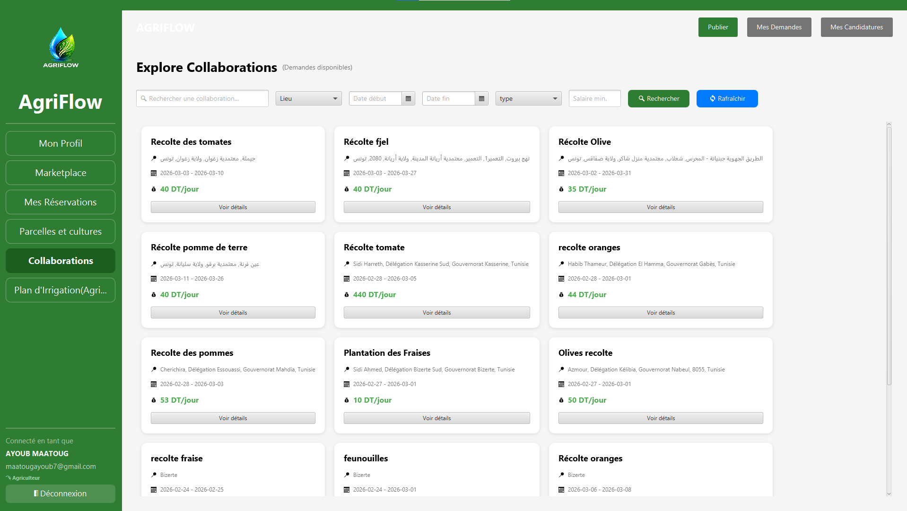
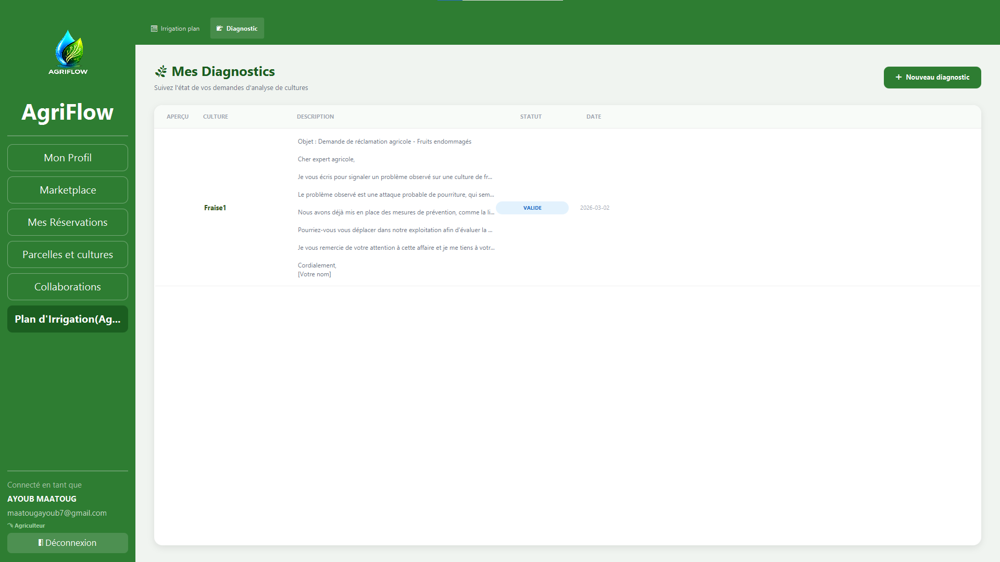

Smart Farming Desktop Application – PIDEV 2025–2026 | Esprit School of Engineering
⬇️ Télécharger la Release v1.0.0AgriFlow est une application desktop JavaFX qui digitalise et optimise la gestion agricole en Tunisie. Elle permet aux agriculteurs, experts et administrateurs de gérer les parcelles, cultures, diagnostics, marketplace, irrigation et bien plus — le tout assisté par l'intelligence artificielle (Google Gemini).









agriflow9.sql dans phpMyAdminmains.MainFX